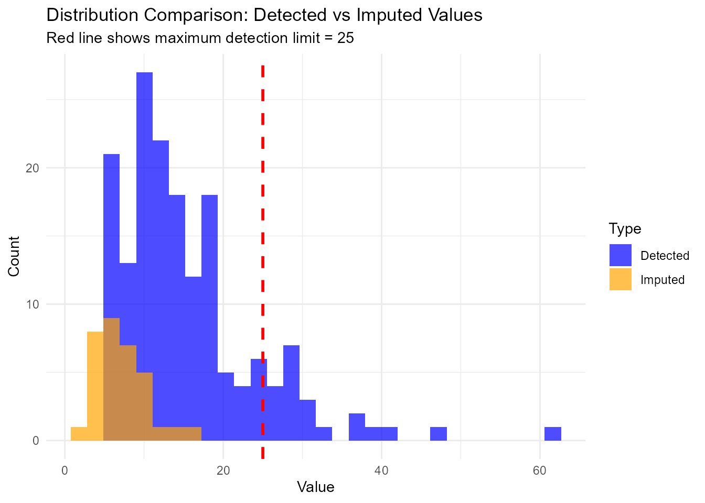
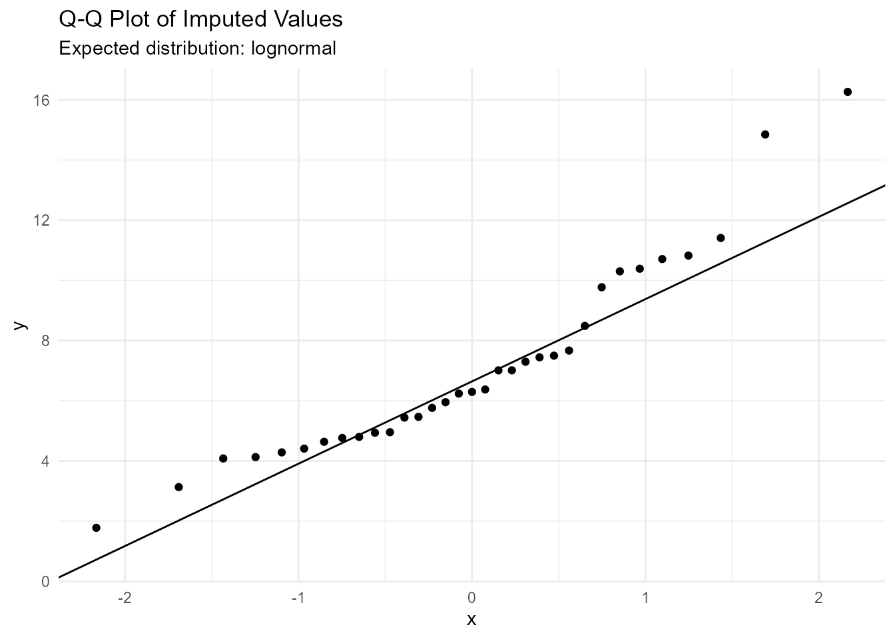

Survival Model-Based Imputation for Laboratory Non-Detect Data
survlab package
2025-12-06
package_vignette.rmdIntroduction
The survlab package provides tools for imputing
non-detect values in environmental laboratory data using survival models
(including Tobit models). This is particularly useful for environmental
engineers, consultants, and laboratory professionals working with
analytical data where measurements fall below detection limits or limits
of quantification (LOQ).
Non-detect values are common in environmental monitoring programs, contamination assessments, and regulatory compliance testing. Traditional approaches like substitution with half the detection limit can introduce bias and affect statistical analyses.
The package automatically: - Selects the best-fitting distribution from multiple options - Generates realistic imputed values below their respective detection limits - Ensures all imputed values are unique and properly constrained - Provides validation and diagnostic tools specifically designed for laboratory data
Installation
# Install from GitHub (once published)
# devtools::install_github("yourusername/survlab")
# Load the package
library(survlab)
library(survlab)
library(data.table)
library(ggplot2)Basic Usage
Load Example Data
The package includes a synthetic environmental laboratory dataset with non-detect values:
# Load example data
data(multi_censored_data)
# Explore the dataset
multi_censored_data[, .(
total_samples = .N,
non_detects = sum(censored == 0),
detects = sum(censored == 1),
min_value = min(value),
max_value = max(value)
)]
#> total_samples non_detects detects min_value max_value
#> <int> <int> <int> <num> <num>
#> 1: 200 33 167 5 61.62913Perform Imputation
The main function impute_nondetect() automatically
validates data quality, selects the best distribution, and generates
imputed values:
# Set seed for reproducibility
set.seed(123)
# Perform imputation with parameter validation
result <- impute_nondetect(
dt = multi_censored_data,
value_col = "value",
cens_col = "censored",
parameter_col = "parameter",
unit_col = "unit"
)Validate Results
Use the validation function to check imputation quality:
# Validate the imputation
validate_imputation(result)
#> loq count min_imputed max_imputed mean_imputed
#> <num> <int> <num> <num> <num>
#> 1: 5 10 3.130343 4.954098 4.411970
#> 2: 8 8 1.777147 7.443072 5.988641
#> 3: 15 12 5.440542 14.849822 9.342475
#> 4: 25 3 5.464246 16.266220 10.072552Examine Results
# Look at the first 10 non-detect observations
result[censored == 0, .(
original_detection_limit = value,
imputed_value = round(value_imputed, 4),
final_value = round(value_final, 4)
)][1:10]
#> original_detection_limit imputed_value final_value
#> <num> <num> <num>
#> 1: 25 8.4872 8.4872
#> 2: 15 10.3007 10.3007
#> 3: 5 4.9371 4.9371
#> 4: 5 4.7981 4.7981
#> 5: 5 4.4084 4.4084
#> 6: 5 4.2841 4.2841
#> 7: 25 16.2662 16.2662
#> 8: 5 4.6366 4.6366
#> 9: 8 6.3738 6.3738
#> 10: 5 4.1271 4.1271Visualization
You can create plots to visualize the imputation results:
# Prepare data for plotting
plot_data <- rbind(
result[censored == 1, .(value = value, type = "Detected")],
result[censored == 0, .(value = value_imputed, type = "Imputed")]
)
# Create histogram
ggplot(plot_data, aes(x = value, fill = type)) +
geom_histogram(alpha = 0.7, bins = 30, position = "identity") +
geom_vline(xintercept = attr(result, "max_detection_limit"),
linetype = "dashed", color = "red", linewidth = 1) +
labs(title = "Distribution Comparison: Detected vs Imputed Values",
subtitle = paste("Red line shows maximum detection limit =",
round(attr(result, "max_detection_limit"), 3)),
x = "Value", y = "Count", fill = "Type") +
theme_minimal() +
scale_fill_manual(values = c("Detected" = "blue", "Imputed" = "orange"))
# Q-Q plot to check distribution fit
ggplot(result[censored == 0], aes(sample = value_imputed)) +
stat_qq() +
stat_qq_line() +
labs(title = "Q-Q Plot of Imputed Values",
subtitle = paste("Expected distribution:",
attr(result, "best_distribution"))) +
theme_minimal()
Advanced Usage
Custom Distribution Selection
You can specify which distributions to test and adjust validation thresholds:
# Test only specific distributions with custom validation
result_custom <- impute_nondetect(
dt = multi_censored_data,
dist = c("gaussian", "lognormal", "weibull"),
min_observations = 50,
max_censored_pct = 50
)Model Information
The function returns useful model information as attributes:
# Extract model information
cat("Best distribution:", attr(result, "best_distribution"), "\n")
#> Best distribution: lognormal
cat("Model AIC:", round(attr(result, "aic"), 2), "\n")
#> Model AIC: 1220.47
cat("Parameter:", attr(result, "parameter"), "\n")
#> Parameter: Nitrate
cat("Unit:", attr(result, "unit"), "\n")
#> Unit: mg/l NO3
cat("Sample size:", attr(result, "sample_size"), "\n")
#> Sample size: 200
cat("Censoring percentage:", attr(result, "censored_pct"), "%\n")
#> Censoring percentage: 16.5 %
cat("Detection limits found:", paste(attr(result, "detection_limits"), collapse = ", "), "\n")
#> Detection limits found: 25, 15, 5, 8
cat("Maximum detection limit:", attr(result, "max_detection_limit"), "\n")
#> Maximum detection limit: 25
# Access the fitted model
model <- attr(result, "best_model")
summary(model)
#>
#> Call:
#> survival::survreg(formula = survival::Surv(x, cens, type = "left") ~
#> 1, dist = d)
#> Value Std. Error z p
#> (Intercept) 2.4672 0.0429 57.6 <2e-16
#> Log(scale) -0.5339 0.0556 -9.6 <2e-16
#>
#> Scale= 0.586
#>
#> Log Normal distribution
#> Loglik(model)= -608.2 Loglik(intercept only)= -608.2
#> Number of Newton-Raphson Iterations: 6
#> n= 200Understanding the Data Structure
The package expects laboratory data with a specific structure:
- value_col: Contains either detected values (for samples above detection limit) or detection limit values (for non-detect samples)
- cens_col: Binary indicator where 0 = non-detect (below detection limit), 1 = detected (above detection limit)
For non-detect observations, the value in value_col is
treated as the detection limit for that specific analysis, allowing for
different detection limits across samples or analytical methods.
Tips for Real Laboratory Data
- Multiple Detection Limits: The package handles data with different detection limits automatically
- Distribution Selection: Let the function test multiple distributions for best fit
-
Validation: Always run
validate_imputation()to check results -
Seed Setting: Use
set.seed()for reproducible results in reports -
Large Datasets: The package uses
data.tablefor efficient memory usage - Environmental Data: Works well with typical environmental contaminant distributions (often lognormal)
Conclusion
The survlab package provides a robust solution for
imputing non-detect values in environmental laboratory data using
survival models. The automatic distribution selection and built-in
validation ensure reliable results for environmental monitoring,
contamination assessment, and regulatory compliance applications.